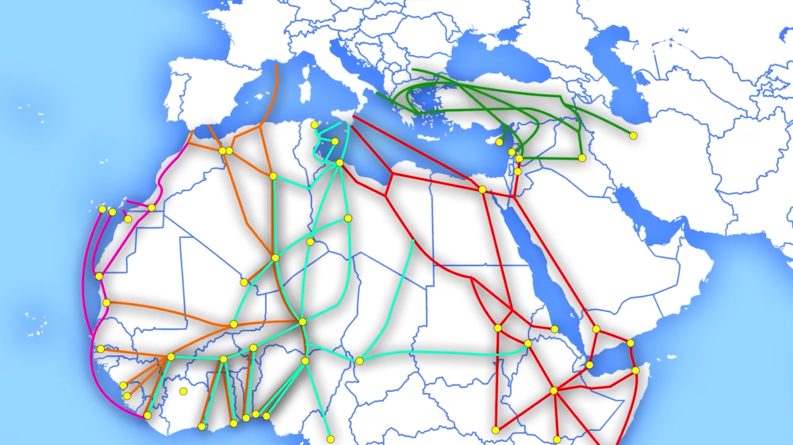

Le rotte migratorie
Esaminiamo l'itinerario percorso dai protagonisti e
confrontiamolo con le principali rotte migratorie.
Le principali rotte migratorie
Esistono molteplici rotte intraprese dai migranti, a seconda della città di partenza. Analizziamole con l’aiuto della mappa.
